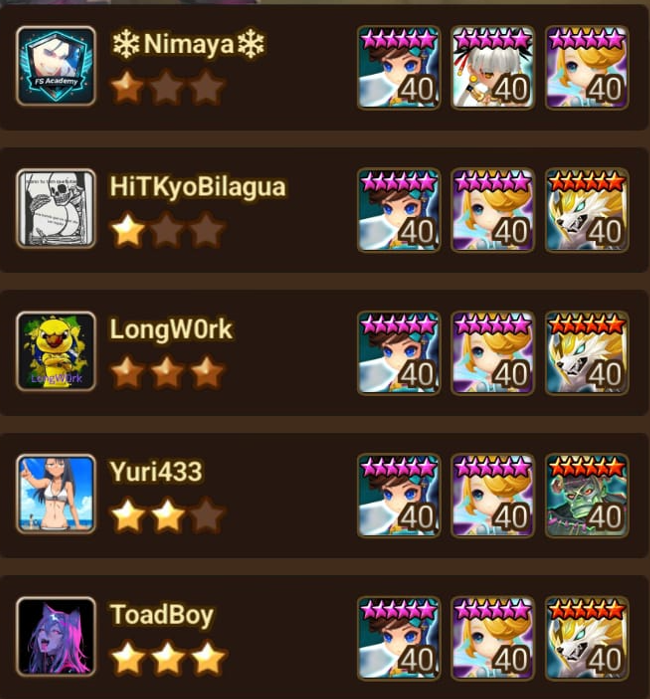
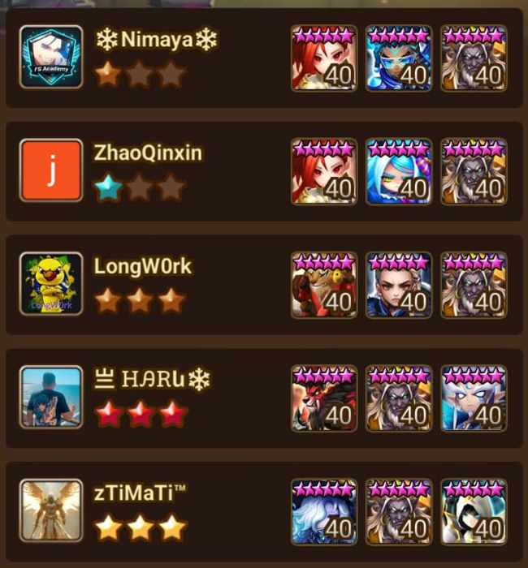
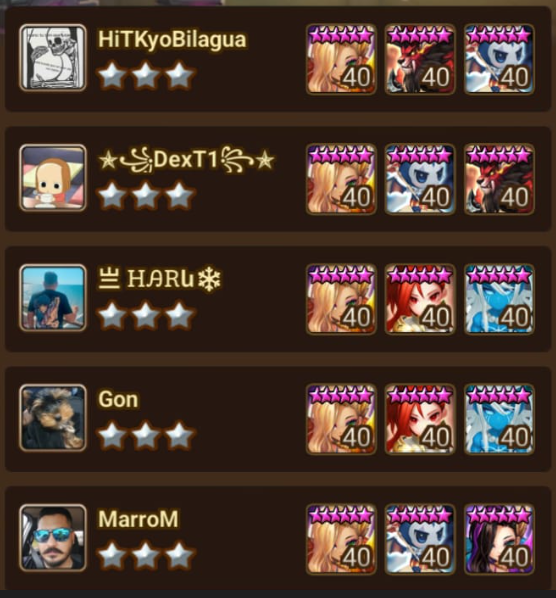
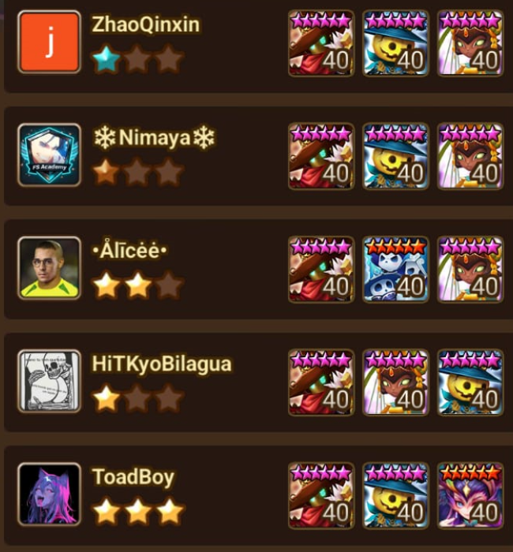

Defesas da Guild Siege
Aqui estão algumas das nossas defesas mais usadas na guild. Cada composição foi testada e funciona bem para proteger nossa base durante as guerras.


Defesa de Mihyang + Cichild super rápida com lider 28%, striper e reset.

Defesa bruiser de Byungchu com bom sustain e controle de turno.

Defesa de Seara + Orion e outros com bom controle de turno e dano.


Defesa de Carcano + Triana com lider de 24%, rápida para levar 1 alvo no primeiro turno.
Aqui estão algumas defesas que também usamos mesmo não sendo as principais:
- Chandra + atacante + start com controle/striper
- Moore + Savanah + Laika/Tesarion/Perna
- Carcano + Miles + Eladriel
- Khmun + Vigor + Roid
- Harmonia + Vigor + Roid
- Martina + Shaina + Triana
- Gapso + Brita + Kumar
- Fiona + Eshir + Atacante
- Platy + Zenitsu wind + Irene